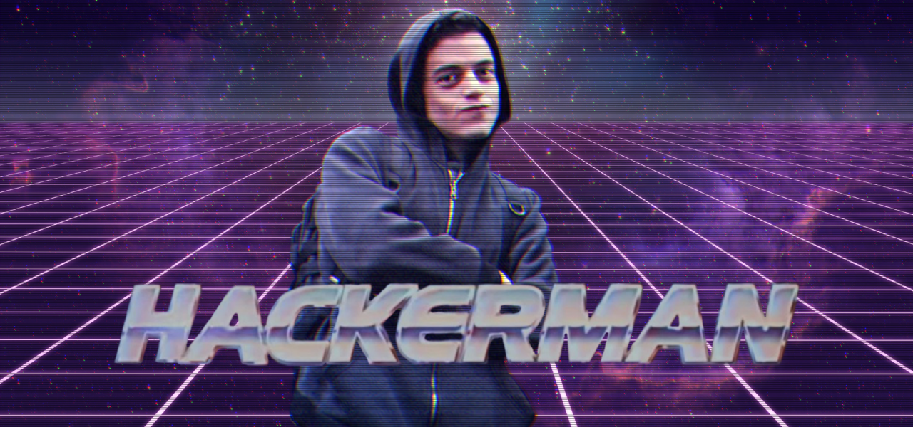

FORMACIÓN.
- Ingeniero de Software por la Universidad de Columbia
- Master en Ciberseguridad y Criptografía
COMPETENCIAS.
- Amplio dominio de sistemas operativos UNIX.
- Uso de multiples herramientas de criptografía y criptoanálisis.
- Alto nivel de gestión de redes y protocolos de internet.
- Dominio de técnicas de ciberseguridad, análisis de vulnerabilidades y mineria de datos.
EXPERIENCIA.
- 4 años trabajando como criptoanalista para Allsafe Cybersecurity
AFICIONES.
Hackear a escondidas y desvelar conspiraciones
